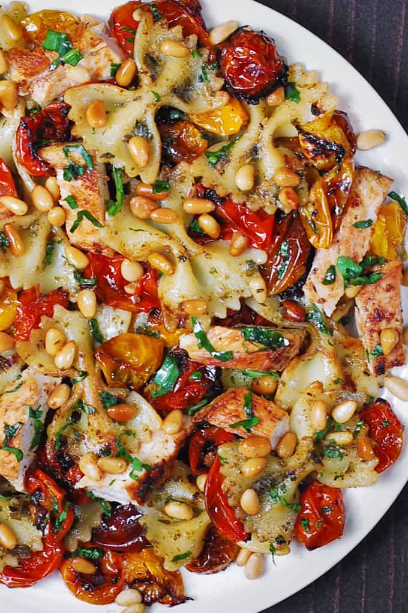

Creamy Chicken Pesto Pasta

Decadent and simple week night recipe to feed the entire family
Creamy Chicken Pesto Pasta is a great choice for a simple weeknight dinner. The recipe uses basic everyday ingredients
and is perfect for family meals. You can use homemade or store-bought basil pesto.
Ingredients
- 10 oz cherry tomatoes (sliced in half)
- 2 tablespoons olive oil
- 3 cloves garlic minced
- 2 tablespoons olive oil
- 1.5 lb chicken breast (2 skinless, boneless chicken breasts)
- ¼ teaspoon salt
- ¼ teaspoon black pepper
- ¼ teaspoon paprika
- 8 oz pasta (bow-tie, penne, or fusilli)
- ¼ cup basil pesto (you can but this at your local grocer instead of making it yourself)
- ½ cup heavy cream
- ¼ cup pine nuts (optional)
Steps
- Preheat oven to 400 F. Toss cherry tomatoes, sliced in half, with 2 tablespoons of olive oil and minced garlic. Spread
in a casserole dish. Roast for about 20 minutes while you prepare the pasta.
- Prepare the chicken. This recipe uses 1.5 lb of chicken breasts which usually means 2 large chicken breasts. Make sure
to use thinly sliced chicken breasts. Slice each chicken breast in half horizontally. Season them with salt, pepper, and
paprika.
- Heat 2 tablespoons of olive oil on medium-high heat in a large skillet until hot. Add chicken and cook for about 5
minutes per each side until it's cooked through. Remove chicken to a plate. Slice it thinly.
- Bring a pot of water to boil. Cook pasta according to package instructions. Drain.
- Add cooked and drained pasta, basil pesto, and cream to the same skillet that you used to sear chicken. Stir gently and
bring to simmer to coat pasta with sauce.
- Top with sliced cooked chicken, roasted tomatoes and pine nuts (optional). Season with extra salt and pepper or add
crushed red pepper flakes, if desired.
Notes
- Want to make basil pesto from scratch? Here is the best, the most flavorful, and the creamiest 20 Minute Homemade Basil Pesto Sauce
- Adjust the amount of basil pesto. This recipe uses ¼ cup of pesto. Feel free to add extra tablespoons of pesto to your
taste.
- Add extra toppings. Lightly toasted pine nuts and freshly grated Parmesan cheese add extra flavor and texture.
- Use extra veggies. If you want to add more vegetables, add sliced fresh tomatoes, sliced cooked asparagus, sun-dried tomatoes, or
mushrooms.
- Add spiciness. Add red pepper flakes if you would like to make your pasta spicy.
- Adjust seasonings. Even though the basil pesto tends to be salty, do taste the final dish before serving and season it with extra salt and
pepper, if needed.
Returnt to top
Return to homepage